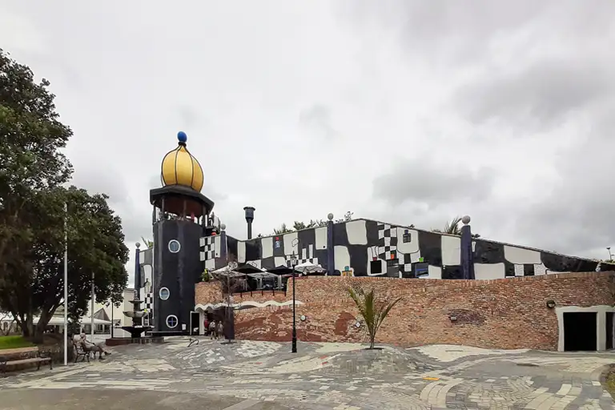
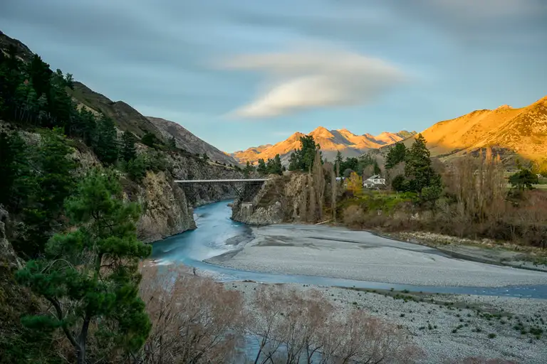
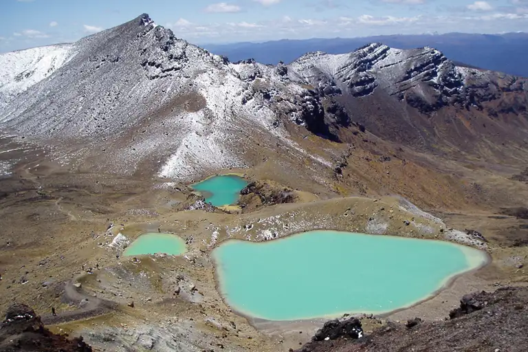
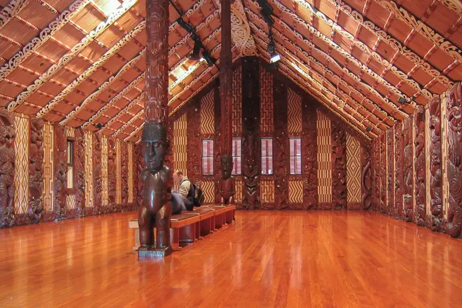
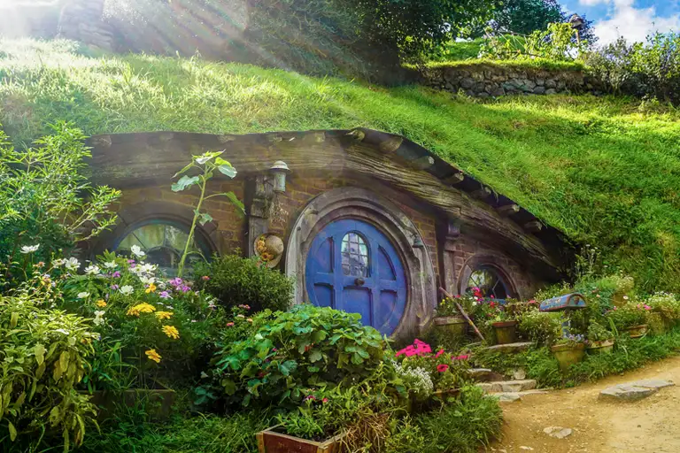
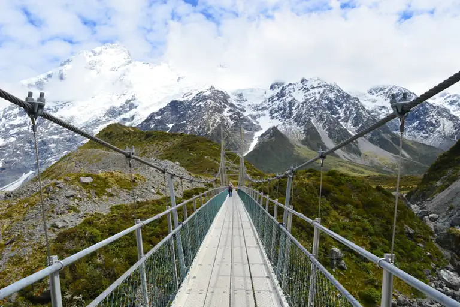
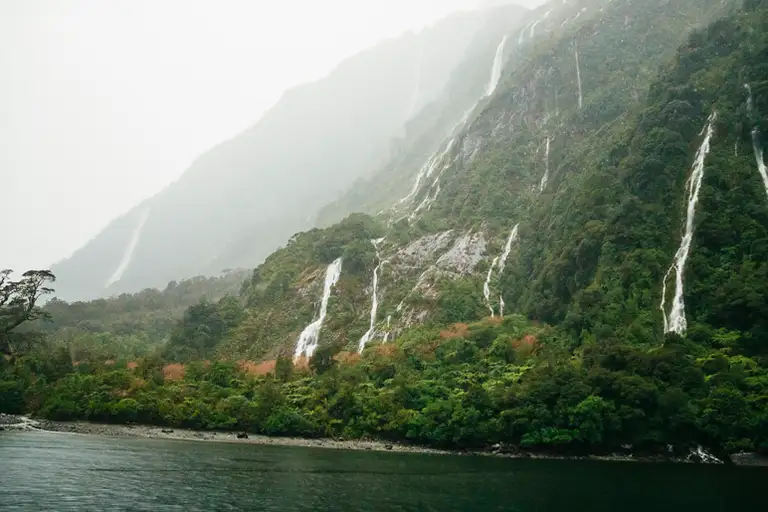

About New Zealand
New Zealand, located in the southwestern Pacific Ocean, is renowned for its diverse landscapes, ranging from lush forests and pristine beaches to rugged mountains and geothermal wonders. The country is home to a rich Maori culture, vibrant cities, and a plethora of outdoor activities such as hiking, bungee jumping, and water sports. New Zealand's unique biodiversity and commitment to conservation make it a paradise for nature lovers.
Top Attractions
- Hundertwasser Art Centre
- Hanmer Springs
- Tongariro National Park
- Waitangi Treaty Grounds
- Hobbiton
- Aoraki/Mount Cook National Park
- Waitomo Caves
- Milford Sound

This whimsical building with curvaceous walls and colorful, eye-catching mosaics makes Hundertwasser Art Centre one of the top sights in New Zealand, creating a unique experience before you even enter its doors. Friedenscreich Hundertwasser’s bold vision of marrying art, architecture, and nature is palpable at every turn in this museum. In addition to exhibits featuring Hundertwasser’s work, the Hundertwasser Art Centre shares space with the Wairau Māori Art Gallery, where you can immerse yourself in the modern art of the Māori world.

The idyllic mountainous village of Hanmer Springs is a favorite destination for families, with incredible scenery and diverse attractions like warm healing pools and exhilarating white water rafting tours. Parents can relax while being pampered with treatments at the Hanmer Springs Thermal Pools and Spa while kids race through the park’s spiraling slides and water playground. The backdrop of the Southern Alps looks especially breathtaking from a boat as you white water raft on the Waiau River. Hike through lush trails in Hanmer Forest, then step outside the treeline to admire the heavens on a stargazing tour.

New Zealand’s oldest national park — also a UNESCO World Heritage site — is rich with culture and astonishing natural wonders. At the visitor’s center in Whakapapa Village, you can learn about the history of Tongariro National Park and the ancient Māori legends of its sacred landscapes. Hike the dramatic sites of the Tongariro Alpine Crossing or ski Mount Ruapehu, where you’ll come across emerald-green lakes, boiling geothermal hot springs, and active volcanoes.

Go on an immersive journey into New Zealand’s cultural heritage at the Waitangi Treaty Grounds and step inside the house where the Māori and British monarchy adopted the Waitangi Treaty in 1840. Te Kōngahu Museum of Waitangi’s interactive displays walk you through the past and present implications of the treaty. Tour the Te Whare Rūnanga carved meeting houses to admire Māori craftsmanship, or try authentic Māori meals at the Whare Waka Café.

Hobbiton tours transport you straight to Middle-earth, leading you through one of the best attractions in New Zealand as you explore the iconic sets of Sir Peter Jackson’s adaptations of “The Lord of the Rings” and “The Hobbit.” Explore hobbit homes and other places in The Shire, like the Dragon’s Inn Pub, where you can enjoy a pint and hearty hobbit-sized meal.

Test your endurance by climbing to the highest mountain peak in New Zealand or hiking its largest glacier at Aoraki/Mount Cook National Park, one of the world’s most underrated national parks. Find kid-friendly treks on the Hooker Valley Track, where you can walk across three swing bridges and take in some of the best vistas of icebergs and the Southern Alps on foot. For the ultimate adventure, take a helicopter tour for breathtaking views of the park’s snow-capped mountains, alpine meadows, and sparkling lakes from above.
Touring the Waitomo Caves is an otherworldly experience, with spectacular bioluminescent larvae-lit ceilings that have earned it a reputation as one of the country’s must-visit spots for over 130 years. You can explore the caves on foot, traversing darkened passageways that reveal glittering limestone formations that make for some of the best sights in New Zealand. Or, book a boat tour to glide serenely across the water as you gaze up at the ceilings illuminated by glowworms.

Milford Sound, or Piopiotahi, is a marvelous fjord with some of the most picturesque sights in New Zealand, which Rudyard Kipling once described as the “Eighth Wonder of the World.” Whether you kayak through dazzling blue waters beneath towering cliffs, cruise past dramatic waterfalls, or hike through ancient rainforests on the Routeburn Track, the stunning natural beauty makes it one of New Zealand’s top attractions.